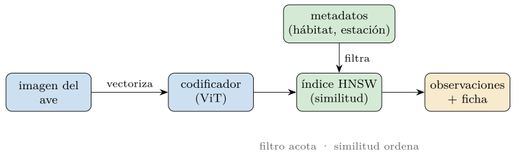
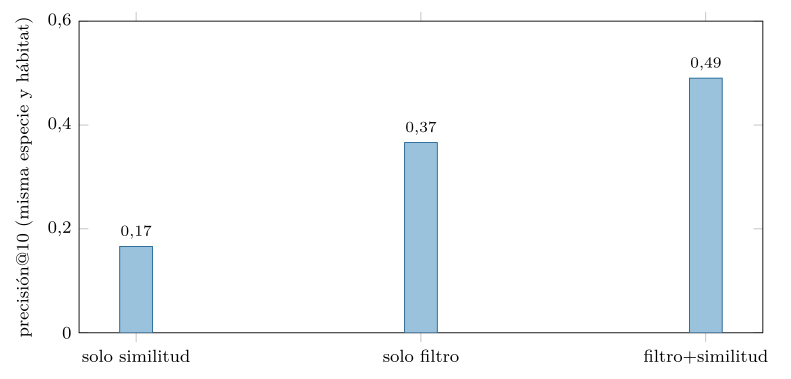
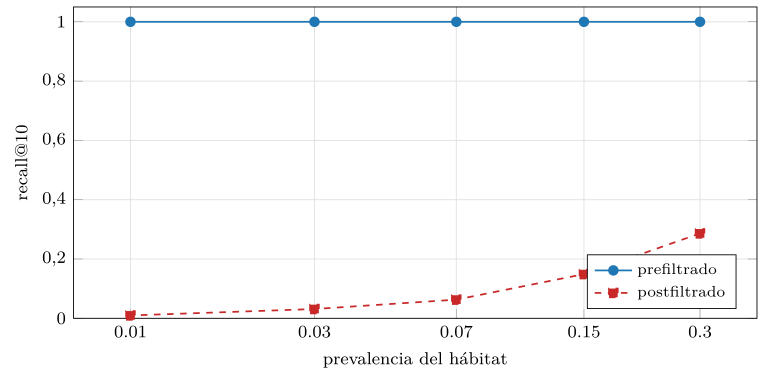
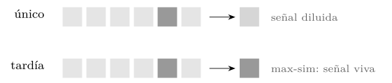
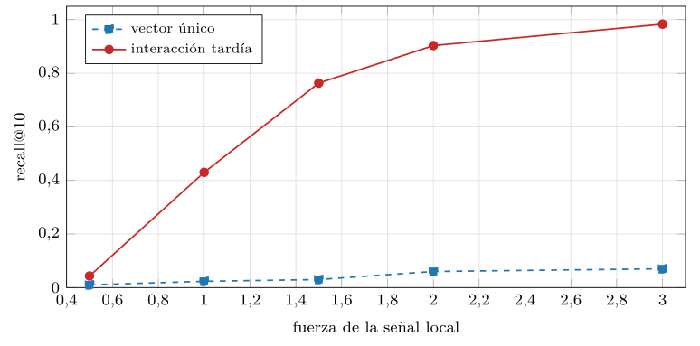
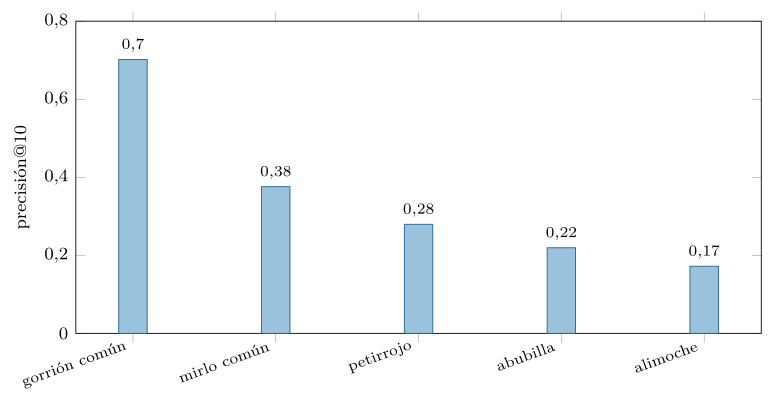

Capítulo 21. Caso de estudio integral
Un libro de bases de datos puede terminar de dos maneras: con una mirada al horizonte —que el capítulo 20 ya ofreció— o con las manos en una pieza real. Este capítulo final elige lo segundo. No introduce teoría nueva: toma todo lo que el libro ha construido —del modelo relacional a la recuperación vectorial— y lo articula en un sistema único y concreto, un sistema de identificación de especies que recupera imágenes de aves, para demostrar, sobre una sola pieza, la tesis que ha vertebrado la obra: el filtrado estructurado acota, la similitud vectorial ordena, y ninguno de los dos basta por separado.
El escenario es real y exigente. Un ornitólogo, ante un ave dudosa, quiere ver observaciones pasadas parecidas —para comparar, para recordar, para decidir—, pero no cualquier observación parecida: las del mismo hábitat, de la misma estación, con su especie confirmada y su registro. «Parecida» es una pregunta para la similitud vectorial sobre la imagen; «del mismo hábitat, de esta época del año» es una pregunta para el filtro relacional sobre los metadatos; y «con su especie y su ficha» es una pregunta para el documento. Las tres, a la vez, en una sola consulta. Es el caso perfecto para cerrar el libro porque ninguna de sus partes lo resuelve sola, y porque el valor de equivocarse —en una decisión de conservación— obliga a tomarse en serio cada decisión de diseño que los capítulos anteriores trataron en abstracto.
El capítulo recorre el sistema entero: el problema y su flujo, la arquitectura que articula los tres estratos, la representación de la imagen como vector, la demostración medida de la tesis, el contraste entre el vector único y la interacción tardía a nivel de región (estilo ColPali) para quien necesite precisión fina, la evaluación con sus métricas y su problema del desbalance, la puesta en producción y la gobernanza de los datos de biodiversidad. Todo se mide en el módulo de la práctica, con embeddings sintéticos en CPU —honestos sobre su naturaleza— que reproducen la dirección de cada fenómeno, que es lo que el diseño necesita. Las cifras de un sistema real se obtienen con sus datos y su codificador; el criterio, que es lo que este libro enseña, se obtiene aquí.
El problema: recuperación de imágenes de aves
Conviene precisar la tarea, porque su forma dicta la arquitectura. No se trata de clasificar el ave —decir «esto es un mirlo común»— sino de recuperar las observaciones pasadas más útiles para el juicio del naturalista. La diferencia es importante y a menudo se confunde. Un clasificador da una etiqueta y una confianza, y pide al naturalista que confíe en una caja negra; un recuperador da observaciones, con su imagen, su especie confirmada y su registro, y deja el juicio al naturalista, que compara y decide. En un dominio donde la responsabilidad es humana y la explicación, obligatoria, recuperar observaciones comparables es a menudo más valioso —y más defendible— que emitir un veredicto automático. El sistema no sustituye al ornitólogo: le da la memoria visual de todas las observaciones que nunca podría recordar.
La tarea, además, es naturalmente híbrida. Una consulta de campo útil no es «enséñame aves parecidas» a secas, sino «enséñame aves parecidas que cumplan estas condiciones»: mismo hábitat —un ave de bosque no se compara con una de humedal—, estación del año, a veces sexo o plumaje, y con especie confirmada por un experto, no presunta. Cada una de esas condiciones es un filtro sobre un atributo estructurado; el «parecida» es la similitud sobre la imagen. Y el resultado debe traer el documento completo —la imagen, la ficha de observación, el registro— para que el naturalista lo lea. Filtrar, ordenar por parecido, devolver el documento: los tres estratos del libro, que aquí no son una elección de diseño sino una exigencia de la tarea.
Conviene insistir en la elección de recuperar y no clasificar, porque marca todo el diseño y es una tentación frecuente. La línea base obvia sería un clasificador: una red que, dada la imagen, emite «mirlo común con probabilidad 0,87». Es directo y, en benchmarks, brilla (Van Horn et al. 2018). Pero arrastra dos problemas que en el trabajo de campo pesan. El primero es la explicabilidad: el clasificador da un número, no una razón, y un naturalista —responsable de la identificación— no puede apoyarse en una probabilidad sin ver en qué se basa. El segundo es la rigidez: un clasificador solo sabe las clases con que se entrenó, y ante una presentación atípica o una especie rara que no vio, falla sin avisar.
El recuperador esquiva ambos. Da observaciones, no etiquetas: el naturalista ve las aves pasadas más parecidas, con su especie confirmada y su registro, y razona por analogía como ya hace en su trabajo de campo —«esto se parece a aquellos tres mirlos comunes que vi»—. La explicación es intrínseca: la evidencia son las observaciones mismas. Y es flexible: ante un ave atípica, recupera lo más parecido que haya, sin pretender encajarla en una caja. No son incompatibles —un sistema maduro puede ofrecer ambos, el recuperador para el juicio y un clasificador como segunda opinión— pero el recuperador es el que respeta el papel del naturalista, y por eso vertebra este caso. La similitud vectorial, aquí, no automatiza la decisión: la informa.
La arquitectura: los tres estratos
El sistema articula los tres estratos en un flujo que la figura 21.1 resume. Cada imagen del ave, al ingresar, pasa por un codificador —una red de visión, típicamente un vision transformer (ViT)— que la transforma en un vector que captura su apariencia; ese vector se almacena en un índice de vecinos aproximados —un HNSW (capítulo 15)— junto a los metadatos estructurados de la observación —hábitat, fecha, especie— en el mismo sistema. Ante una consulta, el motor filtra por los metadatos relevantes, ordena por similitud de los vectores entre los que pasan el filtro, y devuelve las imágenes con sus fichas. Filtro acota, similitud ordena, documento responde.

La elección de las piezas no es arbitraria, y cada una remite a un capítulo. El codificador es el del capítulo 12: una red preentrenada que lleva la imagen a un espacio donde la proximidad significa parecido visual, sin entrenarla nosotros. El índice HNSW es el del capítulo 15: un grafo navegable que da recall alto a latencia baja sobre cientos de miles de vectores, escogido sobre IVF o PQ por su rendimiento en este rango de escala (capítulo 16). El filtro prefiltrado es el del capítulo 17 y 20: empujado dentro de la búsqueda para no hundirse cuando es selectivo. Y el almacén único —vector, metadatos e imagen juntos— es la convergencia del capítulo 20, encarnada aquí en una extensión vectorial sobre un motor relacional (del tipo pgvector sobre PostgreSQL), que da el prefiltrado y la consistencia que dos sistemas separados no darían. El sistema de identificación no inventa nada: compone lo que el libro construyó.
Esa composición tiene una propiedad que conviene subrayar: las piezas encajan porque comparten el vector como lengua común. El codificador produce un vector; el índice organiza vectores; el filtro acota qué vectores se comparan; la interacción tardía es vectores por región; la convergencia aloja el vector junto al dato. El vector es el sustrato que permite que estratos de orígenes tan distintos —el relacional de los años setenta, el documental de los dos mil, el vectorial de la última década— conversen en una sola consulta. Sin esa lengua común, integrar sería pegar sistemas que no se entienden; con ella, la integración es natural, porque todos hablan de proximidad en un espacio. Que el libro haya terminado en el vector no es casual: es la pieza que hace posible la composición de todo lo demás.
Vale la pena seguir el sistema en uso, porque el flujo dicta requisitos que el diseño abstracto no ve. Hay dos momentos: la ingesta y la consulta. En la ingesta, cada ejemplar nuevo —una fotografía de campo con sus metadatos— entra al sistema: se vectoriza con el codificador, se almacena el vector junto a los metadatos y la imagen, y se indexa. Un detalle de campo importa aquí: la especie que acompaña a la observación debe ser la confirmada —por un experto, por anillamiento— no la presunta, porque un corpus de etiquetas dudosas contamina toda recuperación posterior. La calidad del sistema empieza en la calidad de la etiqueta, y esa es una decisión del naturalista, no técnica.
En la consulta, el ornitólogo fotografía el ave dudosa, introduce los metadatos conocidos —hábitat, fecha de la observación— y el sistema responde con las observaciones comparables: del mismo hábitat (prefiltro), ordenadas por parecido (similitud), cada una con su especie confirmada y su ficha (documento). El naturalista las revisa, compara, y decide. El flujo impone tres requisitos que recorren el libro: la consulta ha de ser rápida —segundos, no minutos, para no romper el ritmo del trabajo de campo, lo que fija el punto de operación del índice (capítulo 16)—; el resultado ha de ser explicable —observaciones con fuente, no un número—; y el sistema ha de tratar igual de bien lo común y lo raro —de ahí el prefiltrado de la sección 21.4.1—. El flujo no es un adorno narrativo: es la fuente de los requisitos que justifican cada pieza.
La representación y el corpus: del dato al vector
Del píxel al vector y la construcción del corpus
El corazón del sistema es la representación: cómo una imagen del ave se vuelve un vector cuya proximidad signifique parecido para la identificación. Aquí el capítulo 12 da la herramienta —un codificador de visión preentrenado— y el capítulo 13, la advertencia —no toda proximidad en el espacio del vector significa lo que queremos—. Un ViT (Dosovitskiy et al. 2021) o un modelo contrastivo imagen-texto (Radford et al. 2021) preentrenado sobre millones de imágenes produce vectores donde las imágenes visualmente parecidas quedan cerca; pero «visualmente parecido» no es lo mismo que «de la misma especie», y esa brecha es la primera que un sistema serio debe medir y cerrar.
El problema es concreto. Un codificador genérico, entrenado con fotos de internet, puede juzgar dos aves parecidas por el fondo, la iluminación o la postura, no por los rasgos que importan a la identificación —la barra alar, el anillo ocular, el patrón del plumaje y la forma del pico que componen los rasgos de campo—. El vector captura lo que el codificador aprendió a mirar, y si ese no es lo relevante para la identificación, la similitud ordenará por lo accesorio. Las salidas son las del capítulo 12: ajustar el codificador con imágenes del dominio —fotografías de campo, etiquetadas— para que su espacio refleje el parecido entre especies, o usar uno ya especializado en el dominio. Conjuntos como CUB-200 (Wah et al. 2011) hicieron posible ese ajuste, y trabajos como el del reconocimiento de especies a escala continental (Van Horn et al. 2018) mostraron que una red puede aprender los rasgos correctos. La lección, heredada del capítulo 12, es que el vector es tan bueno como el codificador que lo produce, y que en un dominio especializado el codificador genérico es el punto de partida, no el de llegada.
Hay una sutileza que conviene no pasar por alto, porque distingue la recuperación de la clasificación también en la representación. Para clasificar basta que el espacio separe las clases —que mirlos comunes y gorriones comunes caigan en regiones distintas—; para recuperar se pide más: que la geometría fina dentro de cada clase sea significativa, de modo que «el mirlo común más parecido a este» tenga sentido, no solo «esto es un mirlo común». Un espacio que clasifica bien puede recuperar mal si dentro de cada clase las distancias son arbitrarias. Por eso el ajuste del codificador para recuperación suele usar objetivos contrastivos —acercar lo que debe estar cerca, alejar lo que debe estar lejos— en vez de la mera clasificación, y por eso la evaluación de la sección 21.6 mide la calidad del vecindario, no solo de la frontera. La representación para recuperar es más exigente que para clasificar: no basta agrupar, hay que ordenar dentro del grupo.
Antes de recuperar nada hay que tener qué recuperar, y en identificación de aves el corpus es el activo más caro y delicado del sistema. No es un volcado de imágenes: es una colección curada de observaciones con su verdad de referencia —la especie confirmada— que es lo que da valor a cada recuperación. Construirlo plantea problemas que el resto del libro dio por resueltos. El primero es la etiqueta: una especie confirmada por un experto —mediante anillamiento, captura o la revisión de un especialista— es cara y lenta de obtener, y un corpus solo de observaciones confirmadas está sesgado hacia los ejemplares que parecieron suficientemente llamativos o accesibles para confirmar —un sesgo de selección que el sistema heredará si no se corrige—.
El segundo es la calidad de la imagen: fotos tomadas con dispositivos distintos, iluminación variable, distancias no calibradas, producen vectores que reflejan el dispositivo tanto como el ave, y el codificador puede acabar ordenando por «cámara» en vez de por «especie». Normalizar la captura —o enseñar al codificador a ignorar lo accesorio— es trabajo previo que decide la calidad final. El tercero es la representatividad: si el corpus procede de una sola estación de campo, de una sola región, de un solo hábitat, el sistema funcionará bien para esos observadores y mal para los demás —el sesgo que la sección 21.8 retomará—. Conjuntos públicos como CUB-200 (Wah et al. 2011) dieron a la comunidad un punto de partida, pero también enseñaron sus límites: un corpus que no representa a quien lo va a usar es un sistema que falla con quien más lo necesita.
La lección, que el capítulo 3 ya anticipó para el esquema y aquí reaparece para el dato, es que la calidad de un sistema de datos empieza en la calidad de sus datos, y que en biodiversidad esa calidad es una responsabilidad científica además de técnica. Ningún codificador ni índice rescata a un corpus mal etiquetado, mal capturado o poco representativo: la recuperación es tan buena como el corpus sobre el que opera, y construir ese corpus es la mitad del trabajo, invisible y decisiva.
Hay además una asimetría temporal que conviene anticipar: el corpus se construye una vez con esfuerzo y se usa muchas, pero su valor crece con cada observación bien añadida y se erosiona con cada observación mal añadida. Un solo lote de imágenes con etiquetas erróneas —por un cambio de criterio no documentado, por una tubería de ingestión defectuosa— contamina todas las recuperaciones que lo toquen, y detectar la contaminación a posteriori es difícil porque el sistema sigue «funcionando». De ahí que la disciplina de ingesta —validar la etiqueta, registrar su procedencia y criterio, auditar muestras— no sea burocracia sino la defensa del activo más caro del sistema. En el trabajo de campo, además, esa disciplina tiene un guardián natural: el ornitólogo que confirma la especie, cuyo juicio es la verdad de referencia que ningún algoritmo puede fabricar. El corpus de campo es, en el fondo, conocimiento naturalista acumulado y estructurado, y cuidarlo es cuidar ese conocimiento.
La tesis demostrada: filtro y similitud
Aquí el libro se cierra sobre sí mismo: la práctica mide, sobre el caso de identificación, que ni el filtro ni la similitud bastan solos (figura 21.2). Se define la consulta útil para la identificación —recuperar observaciones de la misma especie y el mismo hábitat que el ave de consulta— y se comparan tres estrategias. La similitud sola —el top-\(k\) por parecido visual, ignorando el hábitat— acierta la especie pero trae observaciones de cualquier hábitat: precisión baja, porque casi ninguna está en el entorno pedido. El filtro solo —observaciones del mismo hábitat, sin ordenar por parecido— acierta el entorno pero trae especies al azar: precisión intermedia. Y filtro más similitud —del mismo hábitat, ordenadas por parecido— acierta ambas condiciones y gana con claridad.

src/cap21_caso.py.Esta figura es, en cierto modo, el resumen de todo el libro en una sola medida. La primera parte enseñó el filtro exacto —el «igual a»— y la tercera, la similitud —el «cercano a»—; aquí se ve que cada uno, solo, deja fuera la mitad de la respuesta, y que la consulta útil los necesita a la vez. El filtro sin similitud trae lo correcto en hábitat pero irrelevante en parecido; la similitud sin filtro trae lo parecido pero en el lugar equivocado. La maquinaria que los une —el prefiltrado dentro del motor, del capítulo 20— es la que convierte dos respuestas a medias en una respuesta entera. Nótese, además, que el orden de las barras no es casual: el filtro solo (0,37) supera a la similitud sola (0,17) en este caso, porque acertar el hábitat —una de las dos condiciones— es más probable cuando se garantiza por construcción que cuando se deja al azar de la similitud global. Pero esa ventaja del filtro es engañosa: trae el hábitat correcto con especies al azar, justo lo que un naturalista no quiere. Solo al añadir la similitud dentro del filtro —ordenar por parecido entre los del hábitat— se acierta también la especie, y la barra salta a 0,49. Las cifras concretas dependen del corpus sintético; la ordenación —ambos solos por debajo, juntos por encima— es la que no cambia, y la que importa. No es una metáfora: es una columna de barras, medida sobre un caso concreto, que dice lo que el libro ha venido diciendo desde el principio.
El prefiltrado en la identificación en el terreno
Que la consulta deba prefiltrar —y no postfiltrar— no es un tecnicismo: en la identificación en el terreno es la diferencia entre un sistema que funciona y uno que falla justo cuando más importa. La práctica lo mide sobre el caso (figura 21.3). Muchos filtros relevantes para la identificación son selectivos: un hábitat poco común, una franja estrecha de fechas de observación, una estación del año infrecuente. Cuando el filtro es selectivo, el postfiltrado —traer los \(k\) globalmente más parecidos y luego descartar los que no cumplen— se hunde, porque casi ninguno de los más parecidos pertenece a esa minoría; el prefiltrado —buscar solo entre los que cumplen— mantiene el recall perfecto.

src/cap21_caso.py.La consecuencia para la conservación es seria. Los casos que más importan —un ave en un hábitat inusual, una especie de un grupo poco representado— son precisamente los de filtro selectivo, donde el postfiltrado falla. Un sistema que postfiltra parecerá funcionar en las pruebas con consultas comunes y fallará en silencio en los casos raros, que son los que más necesitan el apoyo. Por eso la arquitectura del capítulo 20 —un motor que prefiltra, con el vector junto a los metadatos— no es aquí una preferencia de ingeniería sino un requisito de fiabilidad: el sistema debe rendir igual de bien en lo común y en lo raro, y solo el prefiltrado lo garantiza. La decisión técnica tiene, para la conservación, una consecuencia ética.
Vector único, interacción tardía y el punto de operación
Hay una limitación del vector único que en imagen de aves se vuelve crítica, y que el libro anticipó al hablar de la interacción tardía (capítulo 17). Cuando una imagen se resume en un solo vector —el promedio de su contenido— una señal que vive en una región pequeña se diluye: un mirlo común cuyo rasgo distintivo ocupa una esquina de la observación produce un vector global dominado por el resto, poco informativo, de la imagen (figura 21.4). El vector único, bueno para el parecido global, es ciego al detalle local que a veces lo es todo.

La interacción tardía —estilo ColBERT en texto (Khattab y Zaharia 2020), ColPali en documentos visuales (Faysse et al. 2024)— resuelve esto representando la imagen no con un vector sino con muchos, uno por región (parche), y midiendo la similitud como el mejor casamiento parche a parche (max-sim) en vez del producto de dos vectores únicos. El trabajo de campo mide la ganancia (figura 21.5): cuando la señal discriminante vive en una región pequeña, el vector único casi nunca recupera el ejemplar relevante, mientras la interacción tardía lo recupera, y su recall crece con la fuerza de la señal local. Donde el detalle importa, mirar por regiones bate a mirar el promedio.

src/cap21_caso.py.El contraste tiene su precio, y el capítulo 17 ya lo nombró: la interacción tardía guarda muchos vectores por imagen en vez de uno —más memoria— y compara conjuntos en vez de vectores —más cómputo—. No es gratis, y por eso no se usa siempre: para el parecido global —«aves que se parezcan a esta en conjunto»— el vector único basta y es mucho más barato. La interacción tardía se reserva para cuando el detalle local identifica la especie y el vector único lo perdería, que en la fotografía de campo ocurre justo en los casos difíciles. Es, de nuevo, una decisión de adecuación: tanta resolución como el caso exija, y no más. El sistema maduro ofrece las dos y elige según la pregunta.
Hay un punto intermedio que conviene mencionar, porque ilustra que las opciones no son binarias. Se puede usar el vector único para una primera criba barata —recuperar, digamos, las cien observaciones globalmente más parecidas, rápido y con poca memoria— y aplicar la interacción tardía, cara, solo a reordenar esas cien por el detalle local. Es exactamente el patrón de dos etapas del capítulo 17 —recuperar barato y amplio, reordenar caro y fino— ahora con el vector único como recuperador y la interacción tardía como reordenador. Así se paga el coste de la resolución fina solo sobre un puñado de candidatos, no sobre todo el corpus, y se obtiene casi la precisión de la interacción tardía a casi el coste del vector único. La arquitectura del libro vuelve a encajar: lo que en el capítulo 17 fue bi-encoder más cross-encoder, aquí es vector único más interacción tardía, la misma idea servida sobre imagen.
El sistema de identificación de especies fija un punto de operación que ilustra bien la lección del capítulo 16: la elección del índice y sus parámetros no es universal, sino que la dicta el caso. La escala es moderada —una plataforma de ciencia ciudadana acumula decenas o cientos de miles de observaciones, una red grande quizá millones, lejos de los miles de millones de un buscador web— y eso, por sí solo, descarta algunas opciones y favorece otras. A esta escala, un HNSW (Malkov y Yashunin 2020) en memoria da recall alto a latencia de milisegundos sin la complejidad de las particiones distribuidas que solo la escala extrema justifica; el IVF o el PQ, pensados para comprimir y distribuir lo masivo, serían aquí complejidad sin beneficio.
Pero el punto de operación lo fija, sobre todo, la asimetría del coste del error. En un buscador web, perder un resultado relevante es un inconveniente; en la identificación en el terreno, no recuperar una observación que habría cambiado el juicio del naturalista puede invalidar el registro. Eso inclina el punto de operación hacia el recall alto, aun a costa de latencia o de cómputo: se prefiere sondear más —más \(ef\) en el HNSW, más candidatos— y tardar un poco más, a arriesgarse a perder el ejemplar relevante. La latencia tolerable la fija el flujo de la sección 21.2: la consulta es de apoyo, no de tiempo real estricto, así que unos cientos de milisegundos son aceptables, y ese margen se gasta en recall. La curva recall-latencia del capítulo 16 sigue siendo la misma; lo que cambia, y lo que el caso enseña, es dónde situarse en ella: en la identificación de aves, arriba en recall, porque el coste de fallar lo exige. No hay un punto de operación «correcto» en abstracto; hay uno correcto para cada caso, y el de campo es de los que más recall piden.
Más allá de la imagen: la ficha y lo multimodal
El caso, tal como se ha presentado, recupera por imagen; pero un sistema de identificación maduro rara vez se queda en la imagen sola, y aquí confluyen el capítulo 12 y el 19. Cada observación lleva, además de la foto, una ficha de observación —texto libre: notas de campo, descripción, comportamiento— y a veces otros datos. Un sistema completo puede recuperar por imagen, por texto, o por ambos: el codificador multimodal del capítulo 12 lleva imagen y texto a un espacio común, de modo que «aves que se parezcan a esta y cuya ficha mencione canto agudo y vuelo bajo» es una consulta que combina similitud visual y textual. La maquinaria es la misma —vectorizar, indexar, recuperar por similitud— generalizada a dos modalidades.
Y sobre eso se puede montar el patrón del capítulo 19: un RAG de campo (Lewis et al. 2020) que recupere los ejemplares comparables y sus fichas, y se los entregue a un modelo que redacte un resumen —«de las cinco observaciones más parecidas, cuatro fueron gorriones comunes y una, mirlo común; los rasgos compartidos son...»— con las fuentes a la vista para que el naturalista verifique. Aquí reaparecen, intactas, todas las cautelas del capítulo 19: la fidelidad (que el resumen se apoye en las observaciones, no invente), la citación (que cada afirmación apunte a su ejemplar), la abstención (que admita cuando los ejemplares no bastan). El sistema de identificación no es, pues, una isla: es el punto donde confluyen la representación multimodal, la recuperación híbrida, el patrón RAG y la convergencia de motores —el libro entero, una vez más, articulado sobre una pieza que importa—. Que todas las piezas encajen sin fricción sobre un caso real es la mejor prueba de que no eran piezas sueltas, sino partes de un mismo edificio.
Conviene una cautela, sin embargo, para no prometer de más: combinar modalidades no es gratis ni automáticamente mejor. Fundir la similitud visual y la textual exige decidir cómo se combinan —con qué peso, con la fusión de rangos del capítulo 17, con un reordenado—, y una combinación mal calibrada puede rendir peor que la mejor modalidad sola, porque el ruido de una arrastra a la otra. La regla del capítulo 17 se mantiene: añadir una señal solo ayuda si aporta información que la otra no tenía, y hay que medir que así sea, no suponerlo. En la identificación de aves, la imagen suele ser la señal dominante y el texto, un complemento que afina; invertir esa jerarquía sin medirla degradaría el sistema. Lo multimodal amplía lo que se puede preguntar, pero hereda toda la disciplina de evaluación del libro: más modalidades, más que medir, no menos.
Un ejemplo concreto fija las ideas. Un observador sube a la plataforma una observación de un ave pequeña posada en un humedal —un hábitat poco frecuente en el corpus, de difícil cobertura, donde el ornitólogo tiene menos experiencia acumulada—. La imagen es ambigua: podría ser un gorrión común o un mirlo común joven. El naturalista fotografía el ejemplar, indica el hábitat (humedal) y la fecha de observación, y consulta el sistema.
Aquí cada decisión de diseño del capítulo se vuelve tangible. El prefiltrado por hábitat (sección 21.4.1) es crucial: el humedal es raro, y un postfiltrado habría traído observaciones parecidas de bosque o de matorral —inútiles, porque la apariencia varía con el hábitat— mientras el prefiltrado trae solo las del humedal. La interacción tardía (sección 21.4.2) puede marcar la diferencia si el rasgo distintivo ocupa una región pequeña —una barra alar, un anillo ocular— que el vector único diluiría. El desbalance (sección 21.6) es el riesgo de fondo: si el corpus tiene pocos mirlos comunes de humedal —y los tiene, por raro— el sistema podría no recuperar la observación comparable que orientaría al naturalista, y por eso la evaluación por subgrupo y la mitigación del desbalance no son lujos. Y el papel del ornitólogo (sección 21.8) es el marco: el sistema le muestra los ejemplares comparables —tres gorriones comunes y un mirlo común confirmado por un experto, con sus fichas— y es él quien, viéndolos, decide la especie. El sistema no dijo «mirlo común»; le dio al ornitólogo la memoria que no tenía, y la decisión siguió siendo suya. Ese es, en un caso, el valor y el límite del sistema.
La evaluación y el problema del desbalance
Evaluar el sistema es aplicar el capítulo 18 con el rigor que la identificación de especies exige, y trae a la luz un problema que en el trabajo de campo es ineludible: el desbalance. Un corpus de observaciones, como la realidad que refleja, está desequilibrado —muchos gorriones comunes, pocos mirlos comunes, muy pocas especies raras— y la recuperación hereda ese desequilibrio (figura 21.6). La práctica lo mide: la precisión de recuperar la misma especie es alta para las clases frecuentes (el gorrión común, con más de la mitad del corpus, supera el 70 %) y baja para las raras (el mirlo común, la abubilla, el alimoche, por debajo del 30 %), porque para una consulta de una clase rara hay pocos ejemplos de la misma especie entre los que recuperar.

src/cap21_caso.py.La importancia de esto es máxima para la conservación, y conviene no maquillarla. Las clases raras —el alimoche, la abubilla— son justamente las escasas o amenazadas, las que el sistema más debería ayudar a reconocer, y son las que peor recupera, por la misma razón estadística de la concentración del capítulo 13: en un mar de gorriones, el alimoche destaca menos. Un sistema que se evalúe solo con la precisión media ocultará este fallo bajo el buen rendimiento de la clase común, exactamente el «promedio que engaña» que el capítulo 18 advirtió. La evaluación honesta de un sistema de identificación debe medir por clase —y especialmente sobre las especies críticas—, no en agregado, y aceptar que el caso raro es donde el sistema es más débil justo cuando ha de ser más fuerte. Mitigarlo —sobremuestrear las clases raras, ponderar, recoger más observaciones— es parte del diseño; ignorarlo es una negligencia con consecuencias.
Conviene precisar qué métricas usar, porque el capítulo 18 ofreció varias y aquí la elección tiene peso para la conservación. La precisión@k —cuántos de los \(k\) recuperados son de la misma especie— mide la pureza de lo que el naturalista ve, y es la natural para «enséñame ejemplares comparables». Pero en un sistema de apoyo a la identificación importa también el recall sobre la especie crítica: ¿de todos los alimoches comparables que había, cuántos se recuperaron? Perder uno —un falso negativo en la recuperación— es el error caro. Y como las clases están desbalanceadas, conviene una métrica que no se deje dominar por la clase común: medir por clase y promediar las clases, no las observaciones, para que el alimoche pese lo mismo que el gorrión pese a ser mucho menos frecuente. La elección de la métrica, lejos de ser un tecnicismo, codifica qué errores se consideran graves; en conservación, esa elección es una decisión científica disfrazada de fórmula.
Un sistema de identificación responsable se conoce por cómo falla, y conviene catalogar sus modos de error porque cada uno pide una defensa. El primero es la observación fuera de distribución: una imagen que no se parece a nada del corpus —una especie rara, un encuadre de captura inusual—. El recuperador, que siempre devuelve los \(k\) más cercanos, traerá ejemplares poco parecidos sin avisar de que lo son: el riesgo es que el naturalista tome por comparables observaciones que no lo son. La defensa es declarar la distancia: si el caso más cercano está lejos, el sistema debe decirlo —«no hay ejemplares muy parecidos en el corpus»— en vez de presentar resultados con falsa confianza. Es la abstención del capítulo 19, trasladada a la imagen.
El segundo es el filtro que vacía: una combinación de metadatos tan específica que ningún ejemplar la cumple —un hábitat raro en una estación rara con un plumaje raro— y el prefiltrado devuelve un conjunto vacío o mínimo. La defensa es relajar el filtro de forma controlada —ampliar la franja de fechas, agrupar hábitats vecinos— y avisar de que se ha hecho, para que el naturalista sepa que los ejemplares no son del filtro exacto. El tercero es el atajo que domina: una marca de agua, una rama, una etiqueta de anillamiento, que el codificador toma por rasgo y que hace recuperar observaciones que comparten el atajo, no el ave. La defensa está en el dato y el codificador (secciones 21.3.1 y 21.3.1): normalizar la captura, enseñar al modelo a ignorar lo accesorio. El cuarto, ya visto, es el fallo silencioso del desbalance: peor recuperación en la clase rara, que solo la evaluación por subgrupo detecta. Catalogar estos fallos no es pesimismo: es la condición para defenderse de ellos, y un sistema que no sabe cómo se equivoca no está listo para el trabajo de campo.
Operar el sistema: producción, coste y validación
Coste, sostenibilidad y puesta en producción
El sistema tiene una economía que decide su viabilidad, y que reúne las lecciones de coste de los capítulos 18 y 20 sobre una pieza. El almacenamiento domina a escala: cada observación guarda su imagen —pesada— y su vector, y si se usa interacción tardía, muchos vectores por imagen en vez de uno, multiplicando la huella. La cuantización del capítulo 18 es lo que mantiene esto a raya: un vector en 128 bytes en vez de 512 es la diferencia entre un coste asumible y uno que crece sin control a medida que el corpus acumula años de observaciones. El cómputo de ingestión es el segundo coste: vectorizar cada imagen nueva con el codificador —y, si es un modelo grande, en hardware acelerado— tiene un precio recurrente que al ritmo de una plataforma de ciencia ciudadana suma.
Pero el coste que más decide es el humano, y a menudo se olvida. Construir y mantener el corpus —etiquetar con especies confirmadas, curar la calidad, auditar el sesgo— requiere tiempo de ornitólogos expertos, que es caro y escaso; y validar y monitorizar el sistema (sección 21.7.2) consume trabajo de revisión continuo. Un sistema técnicamente brillante que exija más trabajo humano del que ahorra no es sostenible, por bueno que sea su recall. La sostenibilidad de un sistema de identificación de especies no se mide solo en servidores sino en horas de experto, y diseñarlo para reducir esa carga —automatizar la ingesta, hacer la consulta rápida, presentar las observaciones de forma que el naturalista las lea en segundos— es tan importante como afinar el índice. La tecnología más elegante fracasa si nadie tiene tiempo de operarla.
Llevar el sistema a producción es aplicar los capítulos 18 y 20 a una pieza con requisitos de campo. El índice es un HNSW sobre la extensión vectorial del motor relacional, con sus parámetros (\(M\), \(ef\)) ajustados al punto de operación que el caso exige: en identificación, recall alto —perder una observación relevante es grave— aun a costa de algo de latencia, porque la consulta no es de tiempo real estricto sino de apoyo al juicio del experto. La frescura (capítulo 20) importa: el corpus crece con cada observación nueva y se corrige cuando un experto confirma o refuta una especie, y el índice debe reflejar esas altas y correcciones; el vector junto al dato, en un solo motor, hace que la corrección de la especie y la actualización del índice ocurran en la misma transacción.
La cuantización (capítulo 18) entra por el coste: a escala de una plataforma de ciencia ciudadana o de una red de estaciones de campo, millones de imágenes con sus vectores —y, si se usa interacción tardía, muchos vectores por imagen— hacen del almacenamiento un factor real, y comprimir el vector es lo que mantiene la factura a raya. Y la evaluación continua (capítulo 18) vigila la deriva: si cambian los equipos de captura, las regiones muestreadas o el codificador, la calidad puede degradarse en silencio, y un cuadro de métricas por clase —con alertas sobre las críticas— es lo que lo detecta antes de que una observación se pierda. La puesta en producción de un sistema de identificación de especies no es distinta, en su mecánica, de la de cualquier sistema vectorial; lo distinto es que el coste del fallo se mide en valor científico y de conservación, y eso eleva el listón de cada decisión.
Del prototipo al despliegue: validación, deriva y ablación
Hay un abismo entre el sistema que funciona en una demostración y el que se despliega en una plataforma real de biodiversidad, y conviene nombrarlo porque es donde muchos proyectos prometedores se detienen. Un sistema que apoya decisiones de conservación es, en muchos contextos, una herramienta sujeta a exigencias de gobernanza de datos, y eso impone exigencias que ningún capítulo técnico cubre del todo. La primera es la validación en el terreno: no basta con que las métricas del capítulo 18 salgan bien en un conjunto de prueba; hay que demostrar, en un estudio prospectivo y con observadores reales, que el sistema mejora —o al menos no empeora— las identificaciones del naturalista. Esa validación es lenta, cara y ajena a la ingeniería, pero es la que separa una herramienta usable de una demostración.
La segunda es la trazabilidad y el versionado. En una herramienta de referencia, cada respuesta debe poder reconstruirse: con qué versión del codificador se generó cada vector, qué había en el índice ese día, qué parámetros tenía el sistema. La consistencia y el versionado del capítulo 20 dejan de ser buenas prácticas y se vuelven requisitos de fiabilidad: cuando el codificador se actualiza, no se puede simplemente reindexar y seguir; hay que revalidar, porque el sistema ha cambiado. La tercera es la monitorización en producción: una herramienta de identificación no se despliega y se olvida, se vigila —con las métricas por subgrupo de la sección 21.8— para detectar la deriva antes de que dañe, y con un canal para que los naturalistas reporten fallos.
La lección, que cierra la parte de operación del libro, es que la distancia entre el prototipo y el despliegue en el terreno no es técnica sino de rigor: el prototipo demuestra que se puede; el despliegue demuestra que es fiable, una y otra vez, sobre observaciones reales. El libro ha enseñado a construir el sistema; desplegarlo para la identificación de especies exige, además, la humildad de validarlo como lo que es —algo de lo que depende una decisión de conservación— y de aceptar que la mayor parte de ese trabajo ocurre después de que el código funcione.
Una consecuencia práctica de este rigor es que el sistema debe diseñarse, desde el principio, para ser auditable. No basta con que funcione; tiene que poder demostrar que funcionó, observación por observación, ante quien lo cuestione —un comité científico, un gestor del corpus, un observador—. Eso impone decisiones de arquitectura tempranas: registrar cada consulta y su resultado, conservar las versiones del codificador y del índice, poder reconstruir qué habría devuelto el sistema en una fecha pasada. Son requisitos que un prototipo ignora y una herramienta de referencia no puede, y que encarecen el desarrollo de formas que sorprenden a quien viene del software de consumo. La diferencia entre una demostración deslumbrante y un sistema desplegable es, en buena medida, todo este andamiaje invisible de trazabilidad y validación, que no añade ni una décima de recall pero sin el cual el recall no importa, porque el sistema no llega al observador. Conviene saberlo antes de empezar: en biodiversidad, el código es la punta del iceberg.
El capítulo 18 enseñó que un índice se degrada cuando los datos cambian; en la identificación de aves, ese cambio tiene formas propias que conviene reconocer, porque ocurren despacio y se notan tarde. La primera es la deriva del dispositivo: los equipos de captura se renuevan, y las imágenes de la cámara nueva pueden diferir sutilmente de las viejas —color, resolución, enfoque— de modo que el codificador las sitúa en una región distinta del espacio, y una observación nueva deja de parecerse a las viejas comparables por una distorsión técnica, no biológica. La segunda es la deriva de la distribución: si la plataforma empieza a recibir observaciones de regiones o hábitats distintos, el corpus histórico representa cada vez peor a los ejemplares actuales.
La tercera, y la más sutil, es la deriva de los criterios: la propia taxonomía evoluciona —cambian las clasificaciones, se redefinen especies, se dividen y fusionan taxones— de modo que una especie confirmada hace diez años puede no corresponder a lo que hoy se llamaría igual. El corpus, entonces, no solo envejece en sus imágenes sino en sus etiquetas, y una observación antigua bien recuperada puede llevar una etiqueta que ya no significa lo mismo. Esto no tiene equivalente en un buscador web, y es propio de un dominio de conocimiento vivo. Las defensas son las del capítulo 18 más una de campo: monitorizar la distribución de las observaciones nuevas frente al corpus, revalidar periódicamente, y —crucial— mantener trazable qué criterio taxonómico se usó para cada etiqueta, de modo que una re-etiquetación sea posible cuando los criterios cambien. La deriva del corpus recuerda que el corpus no es un activo que se construye una vez, sino uno que se cuida indefinidamente, y que en biodiversidad ese cuidado incluye revisar el significado de lo que se guardó.
Un sistema que compone tantas piezas —codificador, filtro, prefiltrado, interacción tardía, reordenado— invita a una pregunta honesta: ¿cada una aporta de verdad, o algunas están porque sí? La respuesta rigurosa es el estudio de ablación, que el capítulo 18 sugirió y aquí se vuelve obligatorio: medir el sistema completo y luego quitar una pieza cada vez, viendo cuánto cae la calidad. Si quitar el prefiltrado y postfiltrar no cambia nada, el prefiltrado sobraba; si quitarlo hunde el recall en las especies raras, está justificado. La ablación convierte la fe en evidencia: cada componente se queda porque se ha medido que su ausencia empeora, no porque suene bien.
La ablación tiene, en este sistema, un valor doble. Técnicamente, evita la complejidad injustificada —cada pieza cuesta operarla, y una que no mejora es deuda—. Para la identificación, es parte de la validación: ante un comité científico o un gestor del corpus, «añadimos la interacción tardía porque mejora el recall del mirlo común del 0,6 al 0,8 en el estudio de ablación» es un argumento defendible, mientras «la añadimos porque es lo último» no lo es. La figura 21.2 de la tesis es, de hecho, una ablación en miniatura: muestra el sistema con filtro y similitud frente a quitar uno u otro, y mide que ambos hacen falta. Generalizar esa disciplina a cada componente —medir el sistema con y sin él, sobre todo en las clases críticas— es lo que distingue un sistema diseñado de uno acumulado, y es la última aplicación, sobre el caso integral, de la lección que ha recorrido el libro: no afirmar sin medir.
Gobernanza de los datos de biodiversidad
Un sistema que toca datos de observadores y apoya decisiones de conservación añade, sobre la gobernanza del capítulo 20, una capa de exigencias propias que ningún diseño responsable puede ignorar. La protección de la ubicación es la primera: las imágenes y los metadatos de una especie amenazada son datos sensibles —revelan dónde está un ejemplar raro—, y el sistema debe controlar quién busca sobre qué —el prefiltrado puede incorporar el filtro de permisos, de modo que un observador solo recupere observaciones a las que tiene acceso—; además, como advirtió el capítulo 20, del vector se puede reconstruir parte de la imagen, así que el propio vector es dato sensible y se gobierna como tal. El borrado —el derecho del observador a que sus datos se eliminen— obliga a quitar la imagen, sus metadatos y su vector del índice, con la dificultad, ya vista, de borrar en un índice HNSW.
El sesgo es la segunda exigencia, y enlaza con el desbalance de la sección 21.6. Si el corpus sobrerrepresenta un hábitat, el sistema recuperará peor para las observaciones de hábitats poco representados —un sesgo que en biodiversidad se traduce en un mapa incompleto de la fauna—. Auditar el sistema por subgrupos, no solo en agregado, es una obligación, no un extra; y la composición del corpus es una decisión científica y de conservación, no solo técnica. La tercera, y la que ordena las demás, es el papel del naturalista: el sistema recupera, no identifica, y la decisión es y debe seguir siendo humana. Su valor está en ampliar la memoria del experto —ofrecerle las observaciones comparables que no podría recordar— no en sustituir su juicio. Diseñarlo como apoyo, con sus fuentes a la vista y su incertidumbre declarada, no como oráculo, es lo que lo hace a la vez útil y responsable. La tecnología del libro, aquí, sirve al juicio humano; no lo reemplaza.
Conviene cerrar la gobernanza con una reflexión sobre la confianza, que es el recurso que un sistema de identificación gana o pierde. Un sistema que acierta casi siempre pero falla en silencio en la especie rara —sin avisar de que no tiene observaciones comparables, presentando lo poco parecido como si fuera mucho— erosiona la confianza del naturalista más que uno que acierta menos pero declara su incertidumbre. La honestidad del sistema —decir «no sé», mostrar la distancia, avisar de que relajó un filtro— no es solo buena ingeniería: es lo que hace que un experto lo adopte y lo use bien, sin sobreconfiar ni desecharlo. La calibración del capítulo 18 reaparece aquí con su consecuencia más práctica: un sistema bien calibrado, que sabe lo que no sabe, es un sistema en el que se puede confiar; uno sobreconfiado es peligroso justo porque es persuasivo. En la identificación de especies, la humildad del sistema es una característica de seguridad.
Protección de la ubicación: del borrado al aprendizaje federado
La protección de la ubicación merece más que el párrafo de la gobernanza, porque en imagen de campo plantea un problema que la convergencia del capítulo 20 vuelve agudo: para que el sistema sea bueno necesita muchas observaciones, pero las observaciones de especies amenazadas son datos que no pueden salir libremente de la estación de campo que los custodia, por el riesgo de furtivismo. La tensión —más datos mejoran el sistema, pero los datos no se pueden compartir— es central, y tiene respuestas técnicas que conviene conocer.
La primera, modesta, es la anonimización: quitar de los metadatos lo que revela la ubicación exacta del ejemplar. Pero no basta, por dos razones que el capítulo 20 ya insinuó. Una: la propia imagen puede delatar el lugar —un fondo reconocible, un mojón, un rasgo del terreno— y el vector derivado conserva parte de esa información, de modo que compartir vectores no es tan inocuo como parece. Otra: con suficientes metadatos «anónimos» —estación, hábitat, fecha, comarca— se puede re-identificar el emplazamiento. La anonimización reduce el riesgo, no lo elimina.
La respuesta más ambiciosa es el aprendizaje federado (McMahan et al. 2017): en vez de llevar los datos al modelo, llevar el modelo a los datos. Cada estación de campo entrena o ajusta el codificador con sus observaciones, localmente, y comparte solo los parámetros aprendidos —no las imágenes—, que se agregan en un modelo común. Así el codificador mejora con la diversidad de muchas estaciones sin que ninguna imagen salga de su lugar de origen. Es una idea elegante que encaja con la naturaleza del problema —el dato es local y sensible, el conocimiento puede ser compartido— pero trae sus propios retos: los parámetros también filtran información (hay que protegerlos), las estaciones tienen distribuciones distintas (el modelo agregado puede no servir a todas por igual, otra cara del sesgo), y coordinar el entrenamiento entre instituciones es complejo. No es una bala de plata, pero es la dirección en que la protección de la ubicación y la calidad dejan de ser un dilema de suma cero. La lección, prospectiva como el capítulo 20, es que el futuro de los sistemas de identificación pasa por aprender de datos que nunca se centralizan.
Integración en la plataforma de ciencia ciudadana
Un sistema de identificación no vive en el vacío: vive dentro de la infraestructura informática de la plataforma de ciencia ciudadana, y esa integración decide si se usa o se ignora. Las fotografías de campo no están en una carpeta suelta sino en un repositorio de observaciones; los metadatos del ejemplar, en la ficha de observación; y el naturalista trabaja en esas herramientas, no en una aplicación aparte. Un sistema de recuperación que obligue al observador a salir de su flujo —abrir otra aplicación, copiar datos, volver— añade fricción, y la fricción es lo que mata la adopción de una herramienta de campo, por buena que sea.
La integración impone requisitos que recorren el libro desde el otro extremo. La ingesta debe conectarse a las fuentes existentes —leer las imágenes nuevas del repositorio, los metadatos de la ficha— sin duplicar el dato, lo que reabre la consistencia del capítulo 20: el vector debe mantenerse al día respecto a una fuente que el sistema no controla. La consulta debe presentarse donde el naturalista ya está, idealmente embebida en su herramienta, devolviendo las observaciones en segundos. Y la interoperabilidad —los formatos y protocolos estándar del dominio de la biodiversidad— es lo que permite que el sistema converse con el resto sin un acoplamiento frágil. Nada de esto es vectorial, pero todo decide si el sistema vectorial llega a usarse. Es el recordatorio final de que un sistema de datos no es su algoritmo, sino su algoritmo en su contexto: la mejor recuperación del mundo, mal integrada, no recupera nada porque nadie la consulta. El libro ha enseñado a construir el motor; este capítulo recuerda que el motor ha de montarse en un coche que alguien quiera conducir.
Práctica: la identificación, medida
Todo sale de src/cap21_caso.py —numpy, CPU, semilla 21—, que construye un corpus sintético de observaciones de aves y mide los cuatro fenómenos del capítulo. El corpus es la pieza de la que todo depende, y su diseño encarna las decisiones del caso (listado 21.1): cada observación recibe una especie muestreada con la frecuencia desbalanceada del muestreo de campo, un hábitat al azar, y un embedding que es el centro de su especie más ruido —de modo que las observaciones de la misma especie quedan cerca en el espacio, como las acercaría un codificador real—. Es la simplificación honesta del capítulo: cúmulos por clase en vez de un ViT sobre píxeles.
def _corpus(n, dim, rng):
# especie muestreada con la frecuencia desbalanceada del muestreo de campo
esp = rng.choice(len(ESPECIES), n, p=FRECUENCIA)
hab = rng.integers(0, len(HABITATS), n) # habitat
# cada especie es un cumulo; el embedding es su centro mas ruido
centros = _norm(rng.standard_normal((len(ESPECIES), dim)))
emb = _norm(centros[esp] + 0.9 * rng.standard_normal((n, dim)))
return {"emb": emb, "esp": esp, "hab": hab}Listado 21.1. El corpus sintetico de aves: especie con frecuencia desbalanceada, habitat al azar y embedding = centro de la especie mas ruido.
Sobre ese corpus se miden los cuatro fenómenos del capítulo. El núcleo de la tesis compara las tres estrategias sobre la consulta útil (listado 21.2): la relevancia exige misma especie y mismo hábitat, y solo el filtro más la similitud cumple ambas.
def simular_filtro_mas_similitud(n=20000, dim=64, k=10, nq=400):
rng = np.random.default_rng(SEMILLA)
c = _corpus(n, dim, rng)
emb, esp, hab = c["emb"], c["esp"], c["hab"]
p_sim = p_fil = p_amb = 0.0
for _ in range(nq):
qi = int(rng.integers(0, n))
q, qd, qs = emb[qi], esp[qi], hab[qi]
rel = (esp == qd) & (hab == qs) # relevante: especie Y habitat
sims = emb @ q
# solo similitud: top-k por parecido, ignora el habitat
p_sim += rel[np.argsort(-sims)[:k]].mean()
# solo filtro: del mismo habitat, sin ordenar por parecido
mismo = np.where(hab == qs)[0]
p_fil += rel[rng.choice(mismo, k, replace=False)].mean()
# filtro + similitud: del mismo habitat, ordenadas por parecido
p_amb += rel[mismo[np.argsort(-sims[mismo])[:k]]].mean()
return [("solo_similitud", p_sim / nq), ("solo_filtro", p_fil / nq),
("filtro+similitud", p_amb / nq)] # ninguno solo ganaListado 21.2. La simulacion de la tesis completa: relevante = misma especie Y habitat; se promedia la precision@k de las tres estrategias sobre muchas consultas.
El núcleo de la interacción tardía contrasta el vector único con el max-sim sobre parches (listado 21.3): el vector único promedia los parches —y diluye la señal local— mientras el max-sim se queda con el parche que mejor casa con la consulta, conservándola.
# cada observacion son `parches` vectores; el fondo es ruido comun
fondo = _norm(rng.standard_normal((n, parches, dim)))
patron = _norm(rng.standard_normal(dim)) # rasgo de campo discriminante
objetivo, jp = int(rng.integers(0, n)), int(rng.integers(0, parches))
fondo[objetivo, jp] = _norm(fondo[objetivo, jp] + senal * patron)
q = _norm(patron + 0.15 * rng.standard_normal(dim)) # consulta
# vector unico: media de parches -> diluye la senal de una region pequena
vu = _norm(fondo.mean(axis=1))
top_u = np.argsort(-(vu @ q))[:k]
# interaccion tardia: max-sim del parche mas parecido por observacion
maxsim = (fondo @ q).max(axis=1) # mejor parche por observacion
top_t = np.argsort(-maxsim)[:k] # conserva la senal localListado 21.3. El nucleo de la interaccion tardia: una senal vive en un parche; el vector unico (media) la diluye, el max-sim (mejor parche por observacion) la conserva.
El prefiltrado se mide como en el capítulo 20, pero con un filtro de prevalencia variable que imita un hábitat raro (listado 21.4): el prefiltrado busca solo entre los del hábitat —y es exacto—; el postfiltrado toma los \(k\) globales y filtra —y se hunde cuando el hábitat es raro—.
def simular_prefiltrado(n=20000, dim=64, k=10, nq=300):
rng = np.random.default_rng(SEMILLA)
emb = _corpus(n, dim, rng)["emb"]
filas = []
for prev in (0.3, 0.15, 0.07, 0.03, 0.01):
raro = rng.random(n) < prev # habitat de prevalencia `prev`
idx_raro = np.where(raro)[0]
rec_pre = rec_post = 0.0
for _ in range(nq):
q = _norm(rng.standard_normal(dim))
sims = emb @ q
oro = idx_raro[np.argsort(-sims[idx_raro])[:k]] # verdad
pre = idx_raro[np.argsort(-sims[idx_raro])[:k]] # prefiltrado
rec_pre += len(set(pre) & set(oro)) / len(oro)
top = np.argsort(-sims)[:k] # k globales
post = [i for i in top if raro[i]] # postfiltrar
rec_post += len(set(post) & set(oro)) / len(oro)
filas.append((prev, rec_pre / nq, rec_post / nq))
return filas # postfiltrado se hunde con prevListado 21.4. La simulacion de prefiltrado completa: para cada prevalencia del habitat, el prefiltrado busca solo entre los del habitat (exacto) y el postfiltrado filtra los k globales.
El desbalance se mide recuperando, para cada especie, casos de la misma y midiendo la precisión@\(k\) (listado 21.5): las clases raras, con pocos ejemplos en el corpus, recuperan peor.
def simular_desbalance(n=20000, dim=64, k=10, nq=400):
rng = np.random.default_rng(SEMILLA)
c = _corpus(n, dim, rng)
emb, esp = c["emb"], c["esp"]
filas = []
for d, nombre in enumerate(ESPECIES):
idx = np.where(esp == d)[0] # ejemplos de esta clase
prec = 0.0
elegidos = rng.choice(idx, min(nq, len(idx)), replace=False)
for qi in elegidos:
top = np.argsort(-(emb @ emb[qi]))[:k]
prec += (esp[top] == d).mean() # cuantos de la misma especie
filas.append((nombre, float(FRECUENCIA[d]), prec / len(elegidos)))
return filas # raras (alimoche...) peorListado 21.5. La simulacion del desbalance completa: para cada especie, precision@k de recuperar la misma; las clases raras, con pocos ejemplos, recuperan peor.
La demostración: una consulta de identificación
Fiel a la convención del libro —y como cierre de todas las demostraciones— el módulo termina con una consulta completa: dada una observación, recuperar las más parecidas del mismo hábitat, devolviendo su especie (listado 21.6). Es la arquitectura entera en una función: prefiltro relacional por hábitat, orden por similitud vectorial, proyección del documento con sus metadatos.
def demostracion(n=20000, dim=64, k=5):
c = _corpus(n, dim, rng)
emb, esp, hab = c["emb"], c["esp"], c["hab"]
qi = int(rng.integers(0, n))
qs = int(hab[qi])
mismo = np.where(hab == qs)[0] # prefiltro: mismo habitat
orden = mismo[np.argsort(-(emb[mismo] @ emb[qi]))[:k + 1]]
orden = [i for i in orden if i != qi][:k] # excluir la consulta
return [(ESPECIES[esp[i]], HABITATS[hab[i]]) for i in orden]Listado 21.6. La demostracion: dada una observacion, recuperar las mas parecidas del mismo habitat (prefiltro relacional + similitud vectorial) y devolver su especie.
La salida (listado 21.7) muestra la consulta resuelta: de las veinte mil observaciones, el prefiltro deja las del hábitat consultado, y entre ellas la similitud ordena las cinco más parecidas, cada una con su especie y su hábitat. Es la tesis del libro, ejecutándose: el filtro acotó a un hábitat, la similitud ordenó por parecido, y el resultado trae lo que el ornitólogo pidió —observaciones comparables, en el lugar correcto, con su especie a la vista—.
consulta: observacion en 'matorral' (especie: gorrion_comun)
candidatos del mismo habitat: 3324 de 20000
rango similitud especie habitat
1 +0.4235 mirlo_comun matorral
2 +0.3776 mirlo_comun matorral
3 +0.3774 gorrion_comun matorral
4 +0.3645 gorrion_comun matorral
5 +0.3629 gorrion_comun matorralListado 21.7. La salida de la demostracion: el prefiltro deja las observaciones del mismo habitat y la similitud ordena las cinco mas parecidas, con su especie.
Lo que la práctica enseña, y lo que no
El módulo enseña, con fidelidad, la dirección de los fenómenos del caso: que ni el filtro ni la similitud bastan solos, que el postfiltrado se hunde en lo raro, que la interacción tardía recupera la señal local que el vector único diluye, que el desbalance penaliza al caso de interés. Lo que no debe leerse en él son las cifras como veredicto: los embeddings son sintéticos —cúmulos por especie más ruido, no un ViT real sobre imágenes—, el corpus es de juguete, y la magnitud depende de todo eso. Lo que el módulo captura, y captura bien, es por qué cada fenómeno ocurre y qué decisión de diseño implica. Las cifras de un sistema real se obtienen con imágenes reales, un codificador del dominio y una evaluación sobre el terreno; el criterio para construirlo y juzgarlo —que es lo que el libro enseña— es lo que esta práctica deja. La dirección es robusta; la magnitud, ilustrativa, como ha sido en todo el libro.
Conviene un apunte sobre la reproducibilidad, que cierra el círculo metodológico del libro. El módulo fija la semilla, no usa servicios externos, no exige GPU ni modelos descargados, y vuelca sus resultados a ficheros que las gráficas leen: cualquiera que lo ejecute obtiene exactamente las cifras de las figuras de este capítulo, en su propia máquina, en segundos. Esa reproducibilidad no es un detalle de higiene: es lo que permite que el lector verifique en vez de creer, que es justo la actitud que el libro ha querido cultivar. Un sistema real de identificación de especies añade capas —datos sensibles de localización, modelos pesados, validación de expertos— que esta práctica no puede reproducir; pero la forma de razonar sobre él —medir, comparar, ablacionar, declarar límites— es la misma que el módulo encarna con medios mínimos. La práctica es de juguete; el método que enseña, no.
El alcance del sistema: usos, generalidad y límites
El sistema como herramienta de formación
Hay un uso del sistema que no es de identificación y que conviene no pasar por alto, porque amplía su valor y suaviza sus riesgos: la formación. Un aprendiz que se inicia en la ornitología necesita ver muchas observaciones —es así como se educa el ojo en el campo— y un sistema que, dada una observación, recupera las observaciones comparables con su especie confirmada es, sin cambiar nada, una herramienta de estudio: el aprendiz propone su juicio, consulta las observaciones parecidas, y compara su impresión con las identificaciones reales. La similitud vectorial, aquí, no apoya una decisión de campo con un ave delante, sino que acelera el aprendizaje mostrando la variedad que una sola estación de campo tardaría años en ofrecer.
Este uso tiene una virtud ética: en formación, el coste del error desaparece —no hay una identificación que comprometer—, de modo que el sistema puede usarse con libertad para explorar especies raras, plumajes atípicos, los límites de la identificación, sin el riesgo que tendría en el terreno. Y tiene un efecto de vuelta sobre el sistema: los aprendices que lo usan reportan observaciones mal recuperadas, plumajes que confunden al codificador, etiquetas dudosas —una fuente de mejora del corpus que la sección 21.3.1 agradece—. El mismo motor de recuperación sirve, pues, a dos propósitos —apoyar al experto y formar al aprendiz— con exigencias distintas, y diseñarlo consciente de ambos lo hace más valioso. Es un recordatorio de que un buen sistema de datos suele servir a más usos de los que motivaron construirlo, y de que la recuperación de lo comparable —la capacidad que este libro ha perseguido— es útil siempre que alguien necesite aprender de lo que ya se sabe.
Más allá de las aves: la generalidad del patrón
Conviene, antes de la síntesis, levantar la vista del caso concreto, porque su valor no se agota en la identificación de aves: la arquitectura es general, y reconocerlo es ver hasta dónde llega lo que el libro ha construido. Cámbiese «imagen de un ave» por «registro acústico de un canto», «huella genética», «espectro de polen» o «imagen satelital de un hábitat», y el sistema es el mismo: un codificador que vectoriza la imagen, metadatos que filtran, un índice que recupera por parecido, un documento que se devuelve. La bioacústica, la genética de campo, la teledetección comparten la forma del problema —recuperar observaciones comparables para apoyar un juicio— y por tanto la arquitectura. Lo que cambia es el codificador (entrenado en el dominio), los metadatos relevantes y el criterio de relevancia; la estructura, no.
Y la generalidad trasciende la biología. Un sistema de propiedad intelectual que busca patentes parecidas, uno jurídico que recupera sentencias análogas, uno de soporte técnico que halla incidencias similares, uno de control de calidad que compara piezas con defectos catalogados: todos son el mismo patrón —filtrar por atributos, ordenar por similitud, devolver el documento— sobre dominios distintos. El caso de identificación de aves es un ejemplar, no una excepción: se eligió porque sus exigencias —el valor de la decisión, la explicabilidad, la protección de la ubicación de especies amenazadas, el desbalance— son severas y obligan a tomarse en serio cada decisión, pero las decisiones mismas se trasladan a cualquier dominio donde haga falta recuperar lo comparable. Por eso el libro termina aquí y no en otro caso: la identificación de aves es un campo de pruebas exigente, y un sistema que supera sus exigencias enseña a construir los demás. La tesis —filtro y similitud, juntos— es del caso de identificación de aves tanto como de cualquier sistema serio de recuperación.
Los límites de lo que hemos construido
La honestidad que ha guiado el libro exige, antes de la síntesis, nombrar lo que la recuperación por similitud no resuelve, porque conocer los límites de una herramienta es parte de dominarla. El primero: la similitud recupera lo parecido, no necesariamente lo correcto. Que cuatro de las cinco observaciones más parecidas a un ave fueran gorriones comunes no prueba que esta lo sea —la quinta, el mirlo común, podría ser el verdadero análogo—. La recuperación informa el juicio, pero no encierra la verdad; confundir «lo más parecido» con «la respuesta» es el error de fondo que ningún recall alto corrige.
El segundo: la similitud no razona. Recupera observaciones análogas, pero no explica por qué se parecen ni infiere consecuencias —para eso hacen falta el grafo y el modelo del capítulo 19, y aun ellos con sus límites—. Un sistema de recuperación es una memoria asociativa, no un razonador; pedirle que deduzca es pedirle lo que no es. El tercero: todo descansa en el codificador, y el codificador hereda los sesgos y los huecos de sus datos de entrenamiento —lo que no vio, no lo representa bien, y lo que vio sesgado, lo recupera sesgado—. La calidad de la representación es un techo que ningún índice ni filtro levanta.
El cuarto, más filosófico pero real: la similitud es relativa al espacio que el codificador define, y ese espacio codifica una noción de «parecido» que puede no ser la del usuario. Dos observaciones «parecidas» para el modelo pueden ser de especies distintas, y al revés; la geometría del espacio es una hipótesis sobre el significado, no el significado mismo. Reconocer estos límites no debilita lo construido: lo sitúa. La recuperación vectorial es una herramienta poderosa para una tarea concreta —encontrar lo cercano a escala— y un desastre si se le pide ser un oráculo, un razonador o una verdad. Saber para qué sirve, y para qué no, es la última forma del criterio que el libro ha querido dar: ni despreciar la herramienta, ni pedirle lo que no puede. El entusiasmo sin límites y el escepticismo sin matices fallan igual; entre ellos está el juicio, que es lo que hace falta.
Síntesis: el libro entero en una pieza
Este capítulo ha tomado todo lo construido y lo ha puesto a funcionar sobre un sistema de identificación de especies real, demostrando sobre una pieza única la tesis que ha vertebrado el libro: el filtrado estructurado acota, la similitud vectorial ordena, y ninguno basta por separado. Lo ha medido —la consulta híbrida bate a cada estrato solo—; ha mostrado por qué el prefiltrado es, en el trabajo de campo, un requisito de fiabilidad y no una preferencia; ha contrastado el vector único con la interacción tardía para el detalle que importa; ha sacado a la luz el desbalance que penaliza a la especie rara; y ha situado todo bajo la gobernanza —protección de la ubicación de especies amenazadas, sesgo, el papel del ornitólogo— que un sistema que toca la conservación exige.
Conviene mirar, por última vez, el arco completo, porque el sistema de identificación lo recorre entero. La imagen entra como un dato no estructurado que ninguna tabla sabía consultar —el problema que abrió la tercera parte—; el codificador la vuelve un vector, geometría del significado —capítulos 11 y 12—; la distancia mide el parecido, con la cautela de la dimensión —capítulo 13—; el índice hace viable buscar a escala —capítulos 14 a 16—; el filtro híbrido la combina con los metadatos relacionales del primer estrato —capítulo 17—; la evaluación la juzga con honestidad —capítulo 18—; el patrón la integra en un sistema que sirve al ornitólogo —capítulo 19—; y la convergencia la aloja en un único motor donde el vector convive con el dato —capítulo 20—. El sistema de identificación no es un capítulo más: es el libro entero, ejecutándose sobre una pieza.
Y en el centro de esa pieza está la frase que ha sido el hilo desde la primera página: del «igual a» al «cercano a». El filtro por hábitat es un «igual a» —exacto, booleano, heredado de Codd—; la similitud entre observaciones es un «cercano a» —gradual, geométrico, aprendido por un modelo—; y la consulta de campo útil los necesita a la vez, porque el ornitólogo quiere lo exactamente de este hábitat y lo parecido a esta observación. El viaje del libro no fue de un paradigma a otro que lo sustituye, sino de uno a dos que se complementan, y este caso final lo demuestra sobre algo que importa: ayudar a un ornitólogo a recordar, entre todas las observaciones que ha visto la ornitología, las pocas que se parecen a la que tiene delante. Esa es, en una pieza, la promesa de las bases de datos que van del modelo relacional a la recuperación vectorial.
Conviene, al cerrar, separar lo que el libro ha enseñado de lo que pronto caducará. Las herramientas concretas —este codificador, aquel índice, tal extensión de tal motor— cambiarán; algunas ya habrán cambiado cuando estas páginas se lean. Lo que no caduca es el criterio: saber que una consulta seria combina el filtro exacto y la similitud aproximada; que el coste de la similitud está en la dimensión y se doma con índices y cuantización; que recall y tarea no son lo mismo; que el promedio engaña y hay que medir por subgrupo; que acumular no es recordar; que integrar simplifica pero traslada costes de consistencia; que ninguna estructura basta sola. Ese criterio es transferible: quien lo tenga sabrá evaluar la herramienta que aún no existe, porque sabrá qué preguntarle. El libro ha sido, más que un catálogo de técnicas, un entrenamiento del juicio para elegirlas.
Hay también una manera de trabajar que el libro ha intentado encarnar en cada capítulo, y que importa tanto como su contenido: medir antes de afirmar. Cada tesis ha venido con su número, cada número con su código reproducible, cada código con la honestidad de decir qué captura y qué no. Esa disciplina —desconfiar de la afirmación sin medida, preferir la dirección robusta a la cifra absoluta, declarar los límites de lo que se mide— no es exclusiva de las bases de datos vectoriales; es la actitud que distingue la ingeniería del entusiasmo. Si el lector se queda con una sola cosa, que sea esta: ante cualquier promesa sobre datos o similitud, pedir la medida, mirar el mecanismo, y sospechar de lo que no se deja medir.
El libro empezó con una tabla y una pregunta exacta —¿qué filas cumplen esta condición?— y termina con una imagen de un ave y una pregunta gradual —¿qué observaciones se parecen a esta?—. Entre una y otra hay un viaje de veintiún capítulos que ha ido del «igual a» al «cercano a» sin abandonar lo primero al alcanzar lo segundo. El modelo relacional no se ha vuelto obsoleto: sigue siendo el estrato que filtra con precisión, y el caso de identificación de aves lo ha usado en cada consulta. La recuperación vectorial no lo ha sustituido: ha añadido la capacidad de preguntar por el parecido donde antes solo cabía la coincidencia. El futuro, como mostró el capítulo 20, es de los dos juntos, y el caso de identificación de aves ha sido la prueba de que juntos resuelven lo que separados no podían.
Si este capítulo ha cumplido su función, el lector verá ahora cualquier sistema de datos —un buscador, un asistente, una ficha de observación— como una composición de estratos que filtran, guardan, ordenan por parecido y razonan, y sabrá preguntarse, ante cada uno, qué estrato resuelve qué, dónde está el cuello de botella, qué cuesta mantenerlo y cómo medir si funciona. Esa mirada —ver el sistema entero y sus piezas a la vez— es el destino del viaje. El «igual a» y el «cercano a» no eran dos paradigmas en pugna, sino las dos preguntas que, juntas, agotan lo que se le puede pedir a una base de datos: dame lo que es exactamente así, y dame lo que se le parece. Saber cuándo usar cada una, y cómo combinarlas, es lo que este libro ha querido enseñar.
Queda una última reflexión, sobre por qué este viaje importa más allá de la técnica. Durante décadas, las bases de datos respondieron solo preguntas exactas, y eso moldeó lo que nos atrevíamos a preguntarles: dábamos por hecho que para encontrar algo había que saber describirlo con precisión —su clave, su categoría, su valor exacto—. La recuperación vectorial cambia eso: permite preguntar por el parecido, que es como pregunta la mente humana —«algo así», «como aquello», «que me recuerde a»—. El caso de identificación de aves lo encarna: el ornitólogo no busca «el registro con identificador 4471», busca «aves como esta», y por primera vez la base de datos entiende la pregunta. Esa es la transformación de fondo que el libro ha narrado a través de su técnica: no solo una nueva estructura de datos, sino una nueva clase de pregunta que ahora podemos hacerle a la información que guardamos.
Y, sin embargo, el «cercano a» no llegó para destronar al «igual a», sino para completarlo, porque las preguntas humanas son de las dos clases: queremos lo exacto —la observación con este número de registro, la especie con este nombre científico— y lo parecido —observaciones como esta, plumajes como aquellos—. Una base de datos a la altura de quien la consulta debe responder ambas, y combinarlas en una sola pregunta cuando hace falta, que es casi siempre. El sistema de identificación de este capítulo es la prueba modesta y concreta de esa madurez: filtra con la precisión heredada de Codd y ordena con la similitud aprendida por un modelo, y en esa unión —no en ninguna de las dos sola— está el futuro que el libro ha querido mostrar. Del modelo relacional a la recuperación vectorial no hay un salto, sino un puente; y cruzarlo, en ambos sentidos según la pregunta lo pida, es lo que significa entender hoy las bases de datos.
Ejercicios propuestos
Lecturas recomendadas
Dosovitskiy et al. (2021): el vision transformer, el codificador que lleva la imagen del ave al espacio vectorial donde la proximidad significa parecido.
Van Horn et al. (2018): la identificación de especies a gran escala en condiciones de campo, prueba de que una red puede aprender los rasgos relevantes para la identificación de un ave.
Wah et al. (2011): el conjunto CUB-200 de imágenes de aves, ejemplo del dato etiquetado que hace posible especializar el codificador del dominio.
Faysse et al. (2024): ColPali, la interacción tardía sobre documentos visuales, modelo de la variante a nivel de región del sistema.
Khattab y Zaharia (2020): la interacción tardía original (ColBERT), el max-sim sobre representaciones por región que el capítulo lleva a la imagen.
Radford et al. (2021): el modelo contrastivo imagen-texto (CLIP), base de la representación multimodal que permite recuperar por imagen y por texto en un espacio común.
Malkov y Yashunin (2020): el índice HNSW, la estructura de vecinos aproximados elegida para el rango de escala del sistema de identificación por su recall alto a baja latencia.
Johnson et al. (2021): la búsqueda de similitud a escala, referencia para la implementación eficiente del índice que sostiene la recuperación.
Aquí termina el recorrido de este manual: de la tabla y la coincidencia exacta a la imagen y el parecido, pasando por todo lo que hace falta para preguntar por lo cercano a escala. Los ejercicios de los veintiún capítulos y sus soluciones desarrolladas forman el volumen acompañante, Ejercicios y Soluciones, para quien quiera practicar y contrastar su razonamiento. Cierran este manual los apéndices de referencia: el repaso de álgebra lineal y de probabilidad, y la documentación del entorno reproducible.